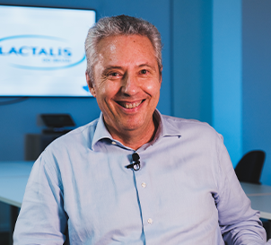
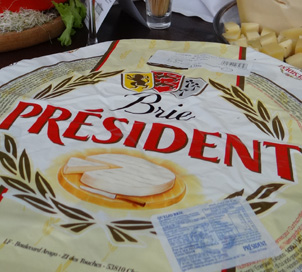
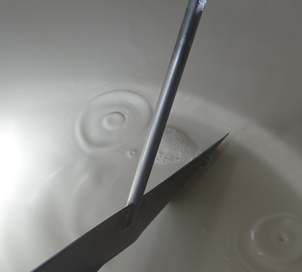
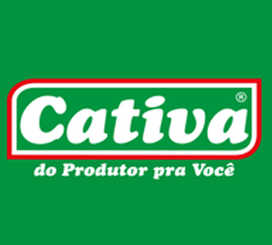
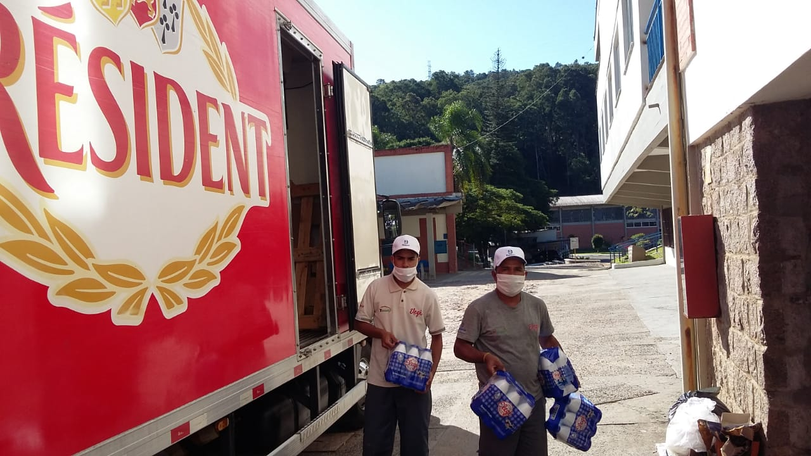

O leite condensado Itambé foi eleito o melhor do mercado brasileiro em um teste às cegas. Para chegar a esse veredito, o suplemento Paladar, do jornal O Estado de S. Paulo, convocou cinco confeiteiros para avaliarem um brigadeiro feito com oito marcas de leite condensado selecionadas.
Notícias
Releases
17/03/23
// Press Releases
Itambé é eleito o melhor leite condensado do mercado
15/03/23
// Press Releases
Cooperativa Languiru e Lactalis firmam parceria de captação no RS
A Cooperativa Languiru, de Teutônia (RS), e a Lactalis do Brasil firmaram parceria para potencializar a produção de lácteos no Rio Grande do Sul e ampliar a assistência aos produtores rurais gaúchos. Pelo acordo, a Languiru fornecerá à Lactalis, em um contrato de longo prazo, todo volume de leite in natura de seus produtores rurais, […]
13/03/23
// Press Releases
Ação foca no empoderamento feminino para combate à violência
O empoderamento feminino é um dos caminhos apontados como forma de combater a violência contra a mulher no Brasil.
08/03/23
// Press Releases
Caixinhas de leite na luta contra a violência à mulher
Parmalat, Elegê, Batavo e Itambé unem-se às Justiceiras e lançam canal de acolhimento Quatro das maiores marcas de leite do mercado brasileiro uniram-se em uma ofensiva nacional contra a violência à mulher. Em parceria com a equipe do Projeto Justiceiras, Parmalat, Elegê, Batavo e Itambé lançam, neste dia 8 de março, um canal único de […]
16/02/23
// Press Releases
Poços de Caldas está no pódio entre os melhores requeijões do mercado
O requeijão Poços de Caldas está no pódio entre os melhores requeijões do mercado, segundo o suplemento Paladar, do jornal O Estado de S. Paulo, o produto foi eleito o terceiro melhor do mercado. Para formar o ranking foram convidados cinco especialistas que avaliaram as principais marcas vendidas. Das 12 avaliadas, o objetivo era encontrar […]
14/12/22
// Press Releases
LACTALIS DO BRASIL FIRMA ACORDO COM FONTERRA E NESTLÉ PARA ADQUIRIR A DPA BRASIL E GERENCIAR A FABRICAÇÃO DE PRODUTOS REFRIGERADOS NESTLÉ NO BRASIL
A Lactalis do Brasil chegou a um acordo para adquirir a DPA Brasil (Dairy Partners America), joint venture criada entre a Fonterra e a Nestlé em 2003 para fabricar e comercializar produtos lácteos em toda a América Latina. Em 2013, a joint venture redirecionou suas atividades para o Brasil e para a comercialização de lácteos […]
08/11/22
// Press Releases
CAMPO EM NOVAS MÃOS
Como preparar a família para um processo de sucessão sem sobressaltos A produção de leite é um negócio de família. E, quando a família muda, é preciso evoluir com ela. Produtores atentos à gestão e ao futuro são aqueles que começam o processo de sucessão hoje porque sabem que o futuro chega rápido e é […]
02/10/22
// Press Releases
Agenda do produtor precavido
Sempre que se vê um ano de seca e perdas no campo, o produtor pensa que isso nunca mais ocorrerá porque, antes da próxima, investirá para evitar novos prejuízos. Mas, os meses passam, a chuva volta e os planos de investimentos que lhe garantiriam a autonomia hídrica ficam na gaveta. Para ajudar na implementação de […]
22/09/22
// Press Releases
Tecnologia a serviço da família
Na década de 1980, Darci e Neli Coser receberam do patriarca Albino Coser duas vacas de leite e alguns hectares de terra na área rural de Xaxim (SC). O que começou com a partilha de bens entre os filhos foi, na verdade, o pontapé de uma produção que está em constante evolução. O casal teve […]
19/09/22
// Press Releases
Elegê inova e lança leite UHT Tradicional+Leve
Alimento com menos gordura e todo sabor chega aos supermercados da Região Sul Para os consumidores que não abrem mão do sabor na hora de escolher seu leite, uma nova opção chega às gôndolas dos supermercados. Líder no mercado de lácteos no Rio Grande do Sul, a Elegê traz uma solução para um dia a […]
06/06/22
// Press Releases
Manteiga Président é eleita a melhor do Brasil
A manteiga Président foi escolhida como a melhor do Brasil em teste promovido pelo suplemento Paladar, do jornal O Estado de S. Paulo. A escolha se deu por meio de cinco especialistas consultados pelo jornal e submetidos a um teste às cegas de 11 amostras de manteiga sem sal, nacionais e importadas. Eles tiveram que […]
24/11/21
// Press Releases
Queijo Président será reconhecido com o prêmio Carrinho Agas 2021
A Président, integrante do portfólio de marcas da Lactalis do Brasil, será reconhecida com o prêmio Carrinho Agas 2021 na categoria Queijos. Concedido pela Associação Gaúcha de Supermercados (Agas), o mérito destaca marcas de diferentes segmentos em 36 categorias, além de duas personalidades. O prêmio será entregue na segunda-feira (29/11) em evento a ser realizado […]
01/06/21
// Press Releases
Cade aprova aquisição, e Lactalis assume operações industriais da Cativa
O Conselho Administrativo de Defesa Econômica (Cade) autorizou a Lactalis do Brasil a incorporar os ativos pertencentes à Cooperativa Cativa, com sede em Londrina, no Paraná. A operação, concluída nesta terça-feira (1º/06), exatos dois meses após o anúncio de intenção, foi formalizada em comunicado ao mercado nesta tarde. Com a aquisição, a Lactalis assume as […]
31/03/21
// Press Releases
Cooperativa Cativa & Lactalis do Brasil firmam Parceria Estratégica*
Em 31 de março de 2021, a Lactalis do Brasil firmou um acordo de parceria com a Cooperativa Cativa, com sede em Londrina, no Estado do Paraná. O acordo prevê uma parceria de longo prazo, tendo como base um contrato de fornecimento exclusivo de leite por parte da Cativa à Lactalis por 10 anos e renovável […]
06/01/21
// Press Releases
Lactalis amplia exportações e abre mercado para lácteos do Brasil
A Lactalis do Brasil, empresa responsável pela produção das marcas Elegê, Parmalat e Président, encerrou o ano de 2020 com projeção de elevar em 167% o volume de produtos exportados em relação a 2019. Ao longo do ano passado, mesmo com as dificuldades logísticas impostas pela pandemia a todos os setores industriais, a Lactalis conseguiu […]
30/11/20
// Press Releases
Elegê é agraciada com o prêmio Carrinho Agas 2020
A Elegê, que integra o escopo de marcas da Lactalis do Brasil, será agraciada com o troféu Carrinho Agas 2020, na categoria Melhor Fornecedor de Leites. A premiação, concedida pela Associação Gaúcha de Supermercados (Agas), destaca produtos nas gôndolas dos supermercados gaúchos a partir de avaliação de diversos critérios. O evento é considerado um dos […]
21/05/20
// Press Releases
Lactalis do Brasil doa alimentos a entidades no Rio Grande do Sul
Três entidades assistenciais de Porto Alegre e uma de Teutônia receberam doações de alimentos da Lactalis do Brasil, indústria de laticínios com fábricas no Rio Grande do Sul. Na capital, o caminhão da Lactalis foi até o Asilo Padre Cacique, à Fundação Pão dos Pobres e ao Instituto Pobres Servos da Divina Providência. Em Teutônia, […]
01/05/20
// Press Releases
Grupo Lactalis adere ao movimento #NÃODEMITA
Com mais de 8,6 mil funcionários no país, a Lactalis foi a primeira entre as grandes empresas do setor de laticínios brasileiro a anunciar seu ingresso no movimento #NÃODEMITA, manifesto que assegura a manutenção do quadro de colaboradores durante a pandemia de Coronavírus. Todas as empresas do grupo – Lactalis do Brasil, Nutrifont e Itambé […]
CONTATO
Assessoria de Imprensa - Jardine Agência de Comunicação
RELACOES COM A IMPRENSA LACTALIS DO BRASIL
reportagem@jardinecomunicacao.com.br
+55 (51) 3224 01 04
Itambé é eleito o melhor leite condensado do mercado
17/03/23

O-PREFERIDO-DO-MERCADO
O leite condensado Itambé foi eleito o melhor do mercado brasileiro em um teste às cegas. Para chegar a esse veredito, o suplemento Paladar, do jornal O Estado de S. Paulo, convocou cinco confeiteiros para avaliarem um brigadeiro feito com oito marcas de leite condensado selecionadas. Um sabor de infância, foi o que o leite condensado Itambé trouxe para os jurados, além da aparência brilhante e textura sedosa.
Os jurados foram Lu Bonometti, da Casa Bonometti; Bertrand Busquet, chef diretor da Chocolate Academy; Juliana Motterda Maria Brigadeiro; Rodrigo Ribeiro, professor de confeitaria e Rafael Aoki, do Quincho, restaurante que foi a sede das degustações.
Foram avaliados textura do produto puro, desempenho na panela, rendimento e características do doce e, claro, o sabor tanto do brigadeiro quanto do produto em sua versão original.
Cooperativa Languiru e Lactalis firmam parceria de captação no RS
15/03/23

Parceria Lactalis-Languiru
A Cooperativa Languiru, de Teutônia (RS), e a Lactalis do Brasil firmaram parceria para potencializar a produção de lácteos no Rio Grande do Sul e ampliar a assistência aos produtores rurais gaúchos. Pelo acordo, a Languiru fornecerá à Lactalis, em um contrato de longo prazo, todo volume de leite in natura de seus produtores rurais, em uma região estratégica, onde a produção é altamente qualificada. A parceria garantirá o pagamento aos produtores e transportadores de leite e apoiará a Languiru em projetos que visem a melhoria da produtividade e qualidade no campo, em defesa da bacia leiteira local. Na mesma linha, a parceria estabelecida permitirá que as empresas trabalhem em regime de cooperação para fortalecimento de seus programas de fomento: o Clube do Produtor Lactalis e o Agrocenters Languiru, buscando a ampliação da assistência técnica nas regiões de atuação da Languiru.
O acordo contempla, também, a produção de lácteos pela Lactalis para Languiru, otimizando os custos industriais para ambas as empresas e permitindo acesso a uma maior diversificação de portfólio à cooperativa. Nessa reestruturação, a Lactalis tentará absorver o maior número de colaboradores possíveis em suas atividades industriais de lácteos.
Por outro lado, os funcionários Lactalis da região terão acesso a um convênio firmado com os supermercados, farmácias e agrocenters da Languiru, fortalecendo os laços de parceria entre as empresas e valorizando a economia de toda sociedade local.
O presidente da Languiru, Dirceu Bayer, aponta que a parceria com a Lactalis faz parte do processo de reposicionamento da cooperativa. A proposta é garantir ainda mais dinamismo para as atividades de campo, colaborando para a elevação da eficiência e da renda dos produtores. “Nosso projeto é garantir que a Languiru continue produzindo mais e melhor. Em conjunto com a Lactalis do Brasil, vamos reinvestir em nossa estrutura e assegurar a longevidade e o fortalecimento de uma produção que é forte e consolidada na região. Unidos, iremos trabalhar fortemente para recuperação de produtores e ampliação da bacia leiteira da cooperativa em suas diversas regiões de atuação”, completou.
Segundo o CEO da Lactalis no Brasil, Roosevelt Júnior, o acerto com a Languiru segue modelo exitoso já adotado pelo grupo em outras regiões do Brasil, a exemplo de parcerias com as Cooperativas CCPR em Minas Gerais e Cativa, no Paraná. “Esse acordo fortalece a bacia leiteira gaúcha, e todos os lados saem ganhando. Vamos unir a expertise da Languiru no campo e a eficiência produtiva da Lactalis, que vem se somando a cooperativas no fomento à produção de lácteos nas principais regiões produtoras do Brasil. Isso contribui com os objetivos estratégicos do grupo no país, que busca constituir uma liderança responsável no mercado que ajude no contínuo processo de melhoria da produtividade e qualidade do leite no campo e, também, para a manutenção de cooperativas fortes e representativas juntos aos produtores rurais”, frisou.
Cooperativa Languiru – Fundada em 1955, a Cooperativa Languiru tem sede em Teutônia (RS). Atua no setor de laticínios, aves, suínos, embutidos e rações, além de operações em supermercados, farmácias e postos de combustíveis. Atualmente, tem 6 mil associados, 3 mil colaboradores e gera cerca de 50 mil empregos indiretos.
Lactalis – Empresa familiar francesa criada em 1933 por André Besnier. O grupo é líder no mercado de lácteos, com presença industrial em 52 países, mais de 270 fábricas e 85.500 funcionários. Iniciou suas atividades no Brasil em 2014 com a aquisição da indústria de queijos da Balkis. Ampliou sua atuação em 2015, com a incorporação de ativos selecionados da LBR e Elebat e marcas como Elegê, Parmalat e Batavo. A Lactalis adquiriu, em 2019, a Itambé e, em 2021, a Confepar. A Lactalis do Brasil opera com as marcas Batavo, Président, Elegê, Cotochés, Poços de Caldas, Itambé e Parmalat. Atualmente, a Lactalis do Brasil é líder em captação de leite no Brasil, somando 2,5 bilhões de litros de leite/ano. Em constante expansão, mantém 21 unidades fabris espalhadas por oito estados (RS, SC, PR, MG, SP, PE, GO, RJ).
Ação foca no empoderamento feminino para combate à violência
13/03/23

Foto: Paula Medeiros
O empoderamento feminino é um dos caminhos apontados como forma de combater a violência contra a mulher no Brasil. A posição é defendida pela idealizadora da ONG Justiça de Saia, a advogada e ex-promotora de Justiça Gabriela Manssur, que palestrou para colaboradores da Lactalis do Brasil na quarta-feira (08/03), Dia Internacional da Mulher.
Além de marcar a programação do Dia Internacional da Mulher, a palestra também foi o momento de apresentar a parceria entre o Projeto Justiceiras e a Lactalis. Por meio do uso de um QR Code em 200 milhões de caixas de leite UHT das marcas Parmalat, Elegê, Batavo e Itambé, será possível acionar uma rede de apoio multiprofissional e realizar denúncias. Após o lançamento da campanha, que tem o mote “Por elas, para elas”, a iniciativa chamou a atenção de influenciadores nas mídias digitais ao longo do dia. “As mulheres também têm o direito de ocupar cargos de liderança, a se dedicar a uma causa”, afirmou Gabriela.
“O leite é um produto para todos, e esse é o foco do projeto das Justiceiras: assegurar os direitos das mulheres e, ao garanti-los, assegurar também a segurança de seus filhos e de toda a sociedade”, observou o presidente da Lactalis para o Brasil e Cone Sul e entusiasta da iniciativa Patrick Sauvageot. “O projeto chega como forma de valorização e empoderamento de nossas funcionárias e, mais do que isso, como uma ação focada em segurança e saúde pública. O Compliance Feminino está alinhado com o conceito internacional da companhia, que prima por uma produção forte e responsável junto às comunidades em que atua e pelo respeito a todos os brasileiros, em especial às mulheres”, completou.
As caixas de leite UHT com o QR Code especial do projeto devem chegar à casa de 8 milhões de brasileiros. As denúncias feitas através do QR Code são encaminhadas para o grupo de trabalho das Justiceiras, que junto às instituições parceiras auxilia em medidas judiciais e atendimento profissional.
Foto: Paula Medeiros
Caixinhas de leite na luta contra a violência à mulher
08/03/23

Crédito: Carolina Jardine
Parmalat, Elegê, Batavo e Itambé unem-se às Justiceiras e lançam canal de acolhimento
Quatro das maiores marcas de leite do mercado brasileiro uniram-se em uma ofensiva nacional contra a violência à mulher. Em parceria com a equipe do Projeto Justiceiras, Parmalat, Elegê, Batavo e Itambé lançam, neste dia 8 de março, um canal único de denúncias. Por meio de QR Code estampado em cerca de 200 milhões de caixinhas de leite UHT, será possível acionar uma rede de apoio multidisciplinar que inclui profissionais das áreas da Justiça, Saúde, Psicologia, Socioassistencial, Acolhimento, entre outras.
Por meio de suas marcas, a Lactalis do Brasil é a primeira empresa do setor alimentício a aderir à rede, criada em 2020 para a identificação, prevenção e combate à violência contra a mulher pela ONG Justiça de Saia e sua idealizadora, a advogada e ex-promotora de Justiça Gabriela Manssur. O foco da iniciativa, explica ela, é facilitar o acesso à Justiça e ao sistema de proteção, colocando o socorro na frente das brasileiras todos os dias. “O leite está na mesa de famílias de diferentes faixas etárias e classes sociais. Estampar esse chamado nas milhares de caixinhas consumidas pelo Brasil é um serviço público”, frisou, lembrando que os relatos podem ser feitos pelas vítimas, mas também por seus amigos e parentes. O projeto já atendeu 13 mil casos, incluindo mulheres de todas as unidades da federação brasileira e em outros 27 diferentes países e conta com 15 mil voluntárias.
Líder em captação de leite no Brasil, a Lactalis do Brasil embasará a divulgação da campanha no amplo potencial do próprio leite. Atualmente, os produtos da companhia chegam a mais de 8 milhões de lares brasileiros. “O leite é um produto para todos, e esse é o foco do projeto das Justiceiras: assegurar os direitos das mulheres e, ao garanti-los, assegurar também a segurança de seus filhos e de toda a sociedade”, completou o presidente da Lactalis para o Brasil e Cone Sul e entusiasta da iniciativa Patrick Sauvageot. “O projeto chega como forma de valorização e empoderamento de nossas funcionárias e, mais do que isso, como uma ação focada em segurança e saúde pública. O Compliance Feminino está alinhado com o conceito internacional da companhia, que prima por uma produção forte e responsável junto às comunidades em que atua e pelo respeito a todos os brasileiros, em especial às mulheres”, completou.
A ação ainda prevê medidas para o público interno da companhia, que tem mais de 10 mil colaboradores no Brasil. Inclui treinamento de equipes, orientação para construção de um ambiente de trabalho harmonioso e uma campanha de RH focada no combate à violência doméstica, assédio moral e sexual, assim como desigualdade de gênero. Mais do que proteger as vítimas, explica Gabriela, o projeto busca a prevenção, chamando os homens para o debate sobre seu papel no enfrentamento da agressão feminina e para a urgência do empoderamento das mulheres.
As informações coletadas durante a campanha são sigilosas e serão encaminhadas às autoridades competentes ou às equipes de apoio necessárias a cada caso. Assim que recebem uma denúncia, as Justiceiras entram em ação seja por meio de medidas judiciais e junto a instituições parceiras, seja por meio de apoio psicológico e médico às vítimas. O canal funciona sete dias por semana, 24 horas por dia.
A preocupação da Lactalis do Brasil com a violência contra a mulher deve-se aos altos índices de ocorrências de ataque de gênero no país. Segundo a ONU, o Brasil ocupa a quinta colocação entre as nações com maiores índices de violação de Direitos das Mulheres. E a situação piorou após a pandemia de Covid-19 com a necessidade de isolamento domiciliar para conter a propagação do vírus. Segundo dados compilados pelo Fórum Brasileiro de Segurança Pública e Datafolha, em 2022, 18,6 milhões de brasileiras sofreram violência física, psicológica ou sexual, mais de 50 mil casos por dia. De acordo com pesquisa da Organização Mundial da Saúde (OMS), uma em cada três mulheres já sofreu alguma violência — número é superior à média global de 27%.
Crédito das fotos: Carolina Jardine
Poços de Caldas está no pódio entre os melhores requeijões do mercado
16/02/23

Poços de Caldas-requeijão
O requeijão Poços de Caldas está no pódio entre os melhores requeijões do mercado, segundo o suplemento Paladar, do jornal O Estado de S. Paulo, o produto foi eleito o terceiro melhor do mercado. Para formar o ranking foram convidados cinco especialistas que avaliaram as principais marcas vendidas. Das 12 avaliadas, o objetivo era encontrar as três que mais trouxessem um sabor delicado, cremosidade e boa apresentação, características da origem do requeijão no Brasil.
Os jurados foram a food stilyst Tatiane Damberg, o gerente gastronômico do grupo Bráz Rodrigo Augusto e os especialistas em queijos Falco Bonfadin, Fernando Oliveira e Mônica Resende. Muito saboroso e levemente amanteigado, o requeijão apresentou textura perfeita, sal no ponto e bom aspecto visual, segundo os jurados.
O cremoso requeijão Poços de Caldas da Lactalis está disponível nas embalagens de 200g e 400g, nos sabores tradicional e cheddar.
LACTALIS DO BRASIL FIRMA ACORDO COM FONTERRA E NESTLÉ PARA ADQUIRIR A DPA BRASIL E GERENCIAR A FABRICAÇÃO DE PRODUTOS REFRIGERADOS NESTLÉ NO BRASIL
14/12/22
 Patrick_Sauvageot_creditoPedroMachado_44meia
A Lactalis do Brasil chegou a um acordo para adquirir a DPA Brasil (Dairy Partners America), joint venture criada entre a Fonterra e a Nestlé em 2003 para fabricar e comercializar produtos lácteos em toda a América Latina. Em 2013, a joint venture redirecionou suas atividades para o Brasil e para a comercialização de lácteos refrigerados.
Pelo acordo firmado, a Lactalis do Brasil assumirá a DPA, empresa que reúne centros de distribuição, duas fábricas localizadas em Araras (SP) e Garanhuns (PE), ficando responsável pela fabricação e distribuição de produtos de diversas marcas, como Chambinho, Chamyto e Chandelle. Para essas três marcas, os direitos de propriedade intelectual no país serão transferidos com a aquisição. O acordo também prevê uma licença de longo prazo para o uso de marcas da Nestlé, como Ninho, Neston, Molico e Nesfit, exclusivamente para o segmento de lácteos refrigerados, de modo que a DPA continue a fabricar e distribuir esses produtos.
Após a operação, os 1.300 funcionários da DPA se juntarão e trabalharão ao lado dos funcionários da Lactalis no Brasil.
O anúncio agregará marcas representativas ao portfólio de refrigerados da Lactalis do Brasil, que hoje já inclui as renomadas Parmalat, Président, Poços de Caldas, Batavo, Itambé e Elegê. “A aquisição da DPA traz muita complementaridade ao nosso portfólio de marcas e produtos, além de ajudar a ampliar nossa cobertura comercial por meio da expansão de áreas geográficas. Consolida a Lactalis como líder responsável em lácteos no Brasil, capaz de auxiliar toda a cadeia produtiva em um processo de melhoria contínua de sua competitividade. Continuaremos trabalhando com a equipe da DPA para melhorar cada vez mais a qualidade e a produtividade do leite no campo, o que resulta em benefícios para todo o setor e, principalmente, para o consumidor brasileiro”, afirma o presidente da Lactalis para Brasil e Cone Sul, Patrick Sauvageot.
Os termos do acordo serão submetidos à apreciação do Conselho Administrativo de Defesa Econômica (Cade).
Sobre a Lactalis
A Lactalis é uma empresa familiar francesa criada em 1933 por André Besnier. Em 2022, o Grupo Lactalis é líder no mercado de lácteos, com presença industrial em 52 países, mais de 270 fábricas e 85.500 funcionários. Iniciou suas atividades no Brasil em 2014 com a aquisição da indústria de queijos da Balkis. Ampliou sua atuação em 2015, com a incorporação de ativos selecionados da LBR e Elebat e marcas como Elegê, Parmalat e Batavo. A Lactalis adquiriu, em 2019, a Itambé e, em 2021, a Confepar. A Lactalis do Brasil oferece aos consumidores produtos lácteos saborosos e de alta qualidade em uma seleção de marcas consagradas, incluindo Batavo, Président, Elegê, Cotochés, Poços de Caldas, Itambé e Parmalat. Atualmente, a Lactalis do Brasil é líder em captação de leite no Brasil. Em constante expansão, a Lactalis mantém 23 unidades fabris espalhadas por oito estados (RS, SC, PR, MG, SP, PE, GO, RJ). A partir da concretização do novo negócio, passará a contar com mais de 10.900 funcionários no Brasil.
Sobre a Nestlé
A Nestlé é a líder mundial no mercado de alimentos e bebidas, com mais de 270.000 funcionários, mais de 2.000 marcas e presença em 186 países. Alinhada a seu slogan “Good food, Good life”, a Nestlé acredita no poder dos alimentos para ajudar as pessoas e os animais a terem uma vida mais feliz e saudável. A empresa persegue metas ambiciosas de sustentabilidade, focadas em promover a saúde do planeta, construir comunidades positivas e apoiar um sistema alimentar saudável. No Brasil, instalou sua primeira fábrica em 1921, em Araras (SP), e hoje atua em oito estados (SP, MG, BA, PE, GO, RJ, RS, ES) com mais de 30 mil funcionários.
Sobre a Fonterra
A Fonterra é uma cooperativa que integra cerca de 9 mil famílias de agricultores da Nova Zelândia. Por meio do espírito de cooperação e de uma atitude positiva, os produtores e funcionários da Fonterra compartilham as qualidades do leite por meio de marcas inovadoras de consumo, serviço de alimentação e ingredientes. A sustentabilidade está no centro de suas ações, assim como o comprometimento em deixar as coisas de uma maneira melhor do que as encontraram. São apaixonados pelas comunidades onde atuam e têm foco em fazer o bem.
Sobre a DPA
Atuando no mercado de refrigerados lácteos há 48 anos, a DPA é uma das maiores companhias do segmento do Brasil. A empresa, que hoje conta com 1.300 funcionários, possui duas fábricas em Araras e Garanhuns, centros de distribuição, sede e equipe de vendas, aposta na fabricação de produtos de alta qualidade com as marcas Nestlé no segmento de refrigerados e detém as marcas Chambinho, Chamyto e Chandelle.
A qualidade diferenciada de seus produtos aliada ao compromisso com a inovação torna seus produtos cada vez mais desejados por seus clientes e consumidores.
Contatos de Imprensa Lactalis do Brasil
Guilherme Portella, diretor de Comunicação, CSR e Assuntos Regulatórios da Lactalis do Brasil – guilherme.portella@br.lactalis.com
Carolina Jardine – assessoria de imprensa Lactalis do Brasil – (51) 3224- 0104 – (51) 99911-1342
Vídeo Oficial
https://drive.google.com/file/d/1Q2023TQMgPMwJHcsU_OTYAMoCPxssnzV/view?usp=sharing
Crédito foto: Pedro Machado/ 44Meia
CAMPO EM NOVAS MÃOS
08/11/22

Rosiclaire Guzzo
Como preparar a família para um processo de sucessão sem sobressaltos
A produção de leite é um negócio de família. E, quando a família muda, é preciso evoluir com ela. Produtores atentos à gestão e ao futuro são aqueles que começam o processo de sucessão hoje porque sabem que o futuro chega rápido e é preciso estar preparado para ele. Seja por meio de consultorias especializadas, seja com o apoio do corpo técnico da Lactalis, produtores vêm profissionalizando a gestão ao lado de seus filhos em busca de uma transição tranquila.
Os exemplos mais exitosos vêm exatamente de quem se antecipa aos problemas. Como os produtores Pedro Reginatto, 70, e Loreni Reginatto, 68, da Fazenda Reginatto, de Cacique Doble (RS), que compartilham a gestão da propriedade com o filho Alexandre Reginatto, 36 anos. A parceria na produção de leite e soja começou quando ele completou 18 anos e as irmãs Veruska e Janaína decidiram ir estudar no Mato Grosso do Sul. Aos poucos, Alexande foi convencendo os pais a reinvestirem na fazenda. O gado que ficava solto na pastagem ganhou um Compost Barn, e a produção decolou. Além de incorporar novas áreas e elevar a produtividade por vaca de 10 litros/dia para 37,5 litros/dia, hoje a Fazenda Reginatto entrega 1.800 litros de leite/dia à Lactalis. “A empresa nos ajuda com a assistência técnica”.
A maior dificuldade nesse processo, confidencia Alexandre, foi incorporar tecnologia aderindo a sistemas de ordenha e monitoramento dos animais mecanizados. Além de internalizar a produção de silagem para o gado, a fazenda adotou técnicas de bem-estar animal e conquistou a certificação de livre de brucelose e tuberculose. “A mudança no trato dos animais resultou em respostas muito positivas tanto na qualidade de vida das pessoas quanto dos animais”, diz. A missão agora, adianta Alexandre, é ver o filho Lorenzo, de apenas sete anos, assumir as rédeas da produção.
Segundo o consultor Ricardo Gonçalves, da Affectum Consultoria, a sucessão rural em propriedade de leite é mais complexa do que na de corte porque há um patrimônio menor a ser dividido e, muitas vezes, a atividade é incapaz de sustentar muitas famílias. “O desafio da empresa familiar é fazer o negócio crescer na mesma velocidade com que a família cresce”, ressalta.
Para evitar que todos os filhos – ou parte deles – abandone a produção, a recomendação de especialistas é intensificar o uso das áreas e agregar valor ao leite. Com mais quantidade de sólidos e volume por vaca, a rentabilidade da propriedade também ganha escala. “Se o produtor tem pouca área, é preciso fazer girar dinheiro. No gado de leite, se tem menos espaço para erro de sucessão”, recomenda o consultor.
Outra história de sucessão vem do município de São João da Urtiga, no interior do Rio Grande do Sul. No Tambo Guzzo, os pais Aldonir e Realda Guzzo trabalham ao lado do filho Maicon, 32, em um modelo de produção que conta com 120 vacas, sendo 55 em lactação, além de novilhas e bezerras. A produção chegou a 2.200 litros/dia e, neste ano, está em 1.700 litros/dia em função da seca. Mas nem sempre foi assim. Quando Maicon era mais novo, a propriedade de apenas 10 hectares de lavouras de soja e milho era insuficiente para dar escala a um projeto leiteiro mais consistente e havia apenas duas vacas para atender ao consumo da família.
Foi em 2007 que o filho, recém-formado no Colégio Agrícola e depois de acumular experiência no varejo em Sananduva (RS), voltou pra casa e chamou o pai para um papo sério. Maicon iria voltar para o campo, mas era preciso implementar algumas mudanças. Com a incorporação de mais 15 hectares e de uma sala de ordenha, a propriedade ganhou escala, intensificou a produção de milho para gerenciar sua própria silagem e investiu em genética que lhe permitiu dar força à produção de leite. A adoção de um Compost Barn ajudou a melhorar a rotina de manejo das vacas e da própria família. Apesar dos ganhos, Maicon admite que há muito a avançar em termos de gestão. Hoje, os Guzzo ainda mantêm os resultados financeiros compartilhados sem uma delimitação de remuneração clara. As decisões de projetos e novos investimentos são todas tomadas em grupo.
Mas chegar a esse consenso não foi fácil. Maicon acredita que é essencial que os filhos integrem-se desde cedo em atividades de menor responsabilidade, mas que lhe permitam aprender com as gerações que lhe antecederam. “A pessoa tem que chegar como ajudante, com humildade para aprender antes de assumir o negócio. A atividade é complexa e é preciso ser produtor, agricultor, mecânico, eletricista, etc. Quem volta para a fazenda e chega direto para assumir está condenado ao fracasso”
Apesar de a fazenda hoje ter internet, energia estável e todo o conforto necessário, Maicon preferiu morar na cidade com a esposa Rosicler e a filha Isabela. Assim como fazem profissionais em grandes centros urbanos, leva 20 minutos para chegar ao trabalho, onde toca a ordenha ao lado do pai e da mãe, que seguem morando no campo. “A diferença é que nesse emprego a gente nunca tem hora para sair. No campo, é preciso muita dedicação”, frisa.
Agenda do produtor precavido
02/10/22

Fabrício Maraschin
Sempre que se vê um ano de seca e perdas no campo, o produtor pensa que isso nunca mais ocorrerá porque, antes da próxima, investirá para evitar novos prejuízos. Mas, os meses passam, a chuva volta e os planos de investimentos que lhe garantiriam a autonomia hídrica ficam na gaveta. Para ajudar na implementação de um projeto concreto que ajude as propriedades a ficarem cada vez menos dependentes do regime de chuvas, a Lactalis trouxe aqui a história de dois produtores que aprenderam a driblar o problema. Gilmar Delmondes da Silva investiu em pastagens abundantes em Ouroeste (SP). O gaúcho Marcos Souza de Freitas, da Cabanha Gema, de Santa Rosa (RS), conta sua experiência na gestão de compra de grãos e insumos.
Mas fique atento, o que vale em uma região produtiva nem sempre serve para a outra. Mire no seu modelo de negócio e na realidade climática da sua região e mãos à obra.
Áreas de Sequeiro
Pastagem + Resistente
Se a chuva não vem, é preciso ter um cultivo resistente e capaz de alimentar o gado leiteiro com eficiência. Pensando em garantir a nutrição do rebanho de 43 bovinos leiteiros (17 em lactação), o produtor Gilmar Delmondes da Silva, da Chácara Santa Bárbara, de Ouroeste (SP), vem cultivando a nova variedade BRS Capiaçu, uma espécie de capim-elefante altamente resistente à estiagem. A gramínea é permanente e permite até três cortes ao ano em regimes normais de chuva e dois em épocas mais secas.
O teste com a Capiaçu na Santa Bárbara começou em 2021, quando o produtor cultivou 12 mil metros quadrados da variedade. Mas, com a seca, precisou comprar nove toneladas de comida para as vacas, o que encareceu seu sistema tendo em vista a alta dos insumos. Neste ano, ele triplicou a área plantada e espera ver a conta fechar no azul.
Exigente em matéria orgânica e adubo, a Capiaçu agrada ao gado. Pode ser utilizada tanto direto no cocho quanto na composição da ração. Em comparação ao milho, é mais vantajosa porque está menos suscetível à queima pela falta de água e cresce o ano todo, enquanto a lavoura de milho rende apenas uma colheita. Segundo o produtor, o ganho em volume de massa compensa a pequena perda em potencial nutricional: enquanto o milho permite rendimento de 20 a 25 litros/vaca/dia, a Capiaçu atinge 19 litros/vaca/dia.
Dicas do Gilmar:
– Use variedades que
produzem massa verde
o ano inteiro e que sejam
mais resistentes à seca;
– Adote um sistema de
irrigação de pastagens por
gotejamento;
– Use parte da massa verde
para alimentar o gado
direto no cocho e com
o restante produza sua
própria ração e estoque na
fazenda;
– Maneje o gado em
piquetes e forneça
alimento no cocho.
Sul do Brasil
Consumo na ponta do lápis
A falta de comida em tempos de seca muitas vezes pode ser amenizada por um planejamento eficiente. Saber quanto os seus animais consomem e criar um plano nutricional ajuda a evitar o desabastecimento. É o que faz o criador Marcos Souza de Freitas, da Cabanha Gema, de Santa Rosa (RS). A propriedade está em uma região com vasta oferta de grãos, e em todo início de safra ele planeja quanto produzirá em suas próprias terras e quanto será obrigado a adquirir dos vizinhos. “Antes disso, precisamos saber com precisão qual o consumo de alimento e forragem que o rebanho necessitará.” Neste ano, conta ele, seus quatro hectares de lavouras de milho produziram 30% da demanda alimentar das 50 vacas Jersey criadas em sistema de Compost Barn. O resto acabou adquirindo na região. Mas, com a seca, foi preciso refazer as contas para suprir a perda do teor de amido, uma vez que, enquanto cargas comuns de milho têm entre 25% a 30% de amido, as deste ano ficaram entre 15% e 20%.
Segundo ele, economizar na comida não é uma opção. Mas é preciso fazer as contas para manter a produção de 1.100 litros/dia estável e lucrativa. O ajuste na alimentação e um reforço extra de milho em grão adquirido direto da cerealista foram vitais para recuperar rapidamente a perda de produtividade por animal registrada no período mais crítico da seca de 2021/2022. Segundo ele, alguns animais que normalmente produzem 27 litros/dia, nesse período, baixaram para um patamar de 22 litros/dia. Com o milho extra, a produção voltou a 25 litros/dia.
Mas quando o produtor não tem a sorte de estar em uma região graneleira, a saída está em adquirir alimento mais longe, o que também exige atenção. Em vez de comprar silagem, o produtor recomenda a aquisição de feno ou outros tipos de matéria seca, o que permite um maior ganho nutricional em relação à carga deslocada. Sobre a possibilidade de investir em pivôs de irrigação, ele aconselha que, antes, se verifique a disponibilidade de água para alimentá-los. “O pivô precisa de uma barragem. E se todo mundo for fazer irrigação vai faltar água da mesma forma.”
Dicas do Marcos
– Saber exatamente qual o
consumo de seus animais;
– Negociar antecipadamente
com parceiros e
produtores da região
acesso à alimentação que
será necessária;
– Consultar o corpo técnico
da Lactalis para verificar
formas de compensação
alimentar viáveis;
– Se tiver que trazer alimento
de longe, invista em
matéria seca que garante
maior rentabilidade;
– Estude a viabilidade de
cultivo de variedades de
inverno como o trigo. Essa
produção deve destinarse
preferencialmente a
novilhas e vacas secas
visto o menor nível
energético desta forragem.
– Atente para produzir
volumosos que possam
ser armazenados. De
nada adianta ter muito
volumoso se ele não será
demandado no momento
certo.
Tecnologia a serviço da família
22/09/22

Crédito Mauricio Coser
Na década de 1980, Darci e Neli Coser receberam do patriarca Albino Coser duas vacas de leite e alguns hectares de terra na área rural de Xaxim (SC). O que começou com a partilha de bens entre os filhos foi, na verdade, o pontapé de uma produção que está em constante evolução. O casal teve quatro filhos: Graziela, Emanuele, Gislaine e Fernando. Somaram-se a eles os cônjuges e os quatro netos. Todos
sempre foram atuantes na propriedade, mas as filhas que estudaram Farmácia, Agronomia e Zootecnia decidiram também ter experiências fora da propriedade, o que alertou a família sobre a importância de mudar o sistema produtivo.
Fernando, que é técnico em agropecuária, está à frente da produção. Ele conta que a expansão foi aos poucos com a compra de mais terras e mais animais. O primeiro grande investimento se deu nos anos2000, quando abriram uma estrebaria inserindo o sistema canalizado de espinha de peixe. Naquele momento, tinham 40 vacas que alcançavam uma produção de 1 mil litros/dia. “Em 2011, terminamos com a granja de suínos que tínhamos para nos dedicar ao leite.”
O manejo sempre foi feito pela família, mas, em razão da saída das irmãs para estudar e trabalhar, o investimento foi sendo direcionado para ampliar a tecnologia e sistematizar a produção. “Em 2020, surgiu a ideia de robotizar a ordenha e conseguimos concretizar em outubro de 2021”, lembra Fernando, pontuando que há sete meses operam com o novo sistema.
A mudança só foi possível porque, há três anos, os Coser investiram no sistema FreeStall. Além de reduzir a necessidade de mão de obra, o manejo robotizado melhora a qualidade do leite e estimula o aumento da produção. “Assim, pudemos dar mais atenção à reprodução
e aos cuidados clínicos para que a propriedade cresça mais”, frisa Fernando.
A aposta da família, que inclusive batizou seu empreendimento de Coser Milk Farm, é atingir em breve a produção de três mil litros/dia. Atualmente, o rebanho de 70 vacas produz em média 32 litros/vaca/dia com entrega diária para a Lactalis de aproximadamente 2.000 l/dia.
Ao todo, são cinco anos entregando leite para a indústria. Fernando explica que a assessoria da empresa foi e segue sendo muito importante para evolução da propriedade. Participante do Clube do Produtor, ele usa o canal para compra de medicamentos e de sal mineral.
Elegê inova e lança leite UHT Tradicional+Leve
19/09/22

Image Elegê
Alimento com menos gordura e todo sabor chega aos supermercados da Região Sul
Para os consumidores que não abrem mão do sabor na hora de escolher seu leite, uma nova opção chega às gôndolas dos supermercados. Líder no mercado de lácteos no Rio Grande do Sul, a Elegê traz uma solução para um dia a dia mais saudável: o leite UHT Tradicional+Leve. Alinhado com a tendência de redução da ingestão de gorduras, o alimento tem 33% menos gorduras totais do que o UHT Tradicional Elegê, mas sem penalizar a palatabilidade e o sabor do leite tradicional. “A Elegê sabe da importância nutricional do leite na dieta do brasileiro e trouxe uma solução inovadora para ajudar o consumidor que está buscando alternativas mais leves, mas sem abrir mão das características sensoriais a que está habituado”, salienta a diretora de marketing de Elegê, Christina Larroude. O novo produto completa a linha de leites UHT Elegê, que inclui as versões Tradicional (3% de gordura), Tradicional+Leve (2% de gordura), Semidesnatado (1% de gordura) e Desnatado (0% de gordura).
O leite é uma das formas mais simples e concentradas de ingestão de nutrientes essenciais para a saúde humana. Em um copo de leite, ainda que nas versões com menos gordura, é possível encontrar proteína, cálcio, fósforo, magnésio e vitaminas necessários para uma boa saúde. Entre os benefícios associados ao leite, estão o estímulo à sensação de saciedade, o controle da diabetes, do colesterol e de doenças cardiovasculares. “O leite é um alimento rico em nutrientes e é essencial para a saúde humana em diferentes fases da vida, seja em seu consumo direto ou no preparo de refeições. Dentro de uma alimentação equilibrada, a recomendação média de consumo de laticínios é de 2-3 porções/ dia, dando preferência para versões de leites desnatados”, explica a nutricionista Simone Bach.
O consumo dos chamados leites magros é uma tendência mundial e de recomendação expressa emitida pelo governo do Estados Unidos por meio do guia Dietary Guidelines for Americans 2020-2025. Na França, por exemplo, 85% do mercado de leite UHT refere-se a rótulos desnatados ou semidesnatados. Na Argentina, esse índice é de 68%. Enquanto isso, no Brasil, o consumo de leites de gorduras reduzidas abrange apenas 13% do mercado. “A Elegê está ao lado do consumidor para ajudá-lo a fazer as melhores escolhas de acordo com suas necessidades nutricionais e estilo de vida”, completa Christina Larroude. Para facilitar esse processo, a linha de leite UHT Elegê também reformulará suas embalagens de forma a comunicar mais claramente os benefícios e a porcentagem de gordura de cada um dos rótulos.
Manteiga Président é eleita a melhor do Brasil
06/06/22

Sem-título-7-1
A manteiga Président foi escolhida como a melhor do Brasil em teste promovido pelo suplemento Paladar, do jornal O Estado de S. Paulo. A escolha se deu por meio de cinco especialistas consultados pelo jornal e submetidos a um teste às cegas de 11 amostras de manteiga sem sal, nacionais e importadas. Eles tiveram que responder a um questionário, comentando sobre textura, sabor, aromas e sentimentos que as manteigas trazem.
Os jurados foram Alethea Suedt, padeira que planta o próprio trigo para a produção dos pães; Carlos Siffert, consultor do empório Casa Santa Luzia e professor da Escola Wilma Kövesi de Cozinha de São Paulo; Francisco Lobello, mestre-queijeiro e responsável pelas ricotas da Brivido; Luiz Filipe Souza, chef do restaurante Evvai; e Renata Braune, chef formada pela Le Cordon Bleu Paris. Descrita como suave, mas com personalidade, a cremosidade e sabor da manteiga impressionaram, em especial pelas notas amendoadas. Segundo os jurados, a manteiga Président possui tudo que se espera de uma manteiga sem sal.
Produzida no Rio Grande do Sul desde 2018, a manteiga Président segue a tradicional receita francesa e tem destacado potencial culinário. Está disponível em potes e tabletes de 200g. As manteigas da Itambé e Batavo também compõem o ranking em 6° e 7° lugar, respectivamente.
Queijo Président será reconhecido com o prêmio Carrinho Agas 2021
24/11/21
 Carolina Jardine
A Président, integrante do portfólio de marcas da Lactalis do Brasil, será reconhecida com o prêmio Carrinho Agas 2021 na categoria Queijos. Concedido pela Associação Gaúcha de Supermercados (Agas), o mérito destaca marcas de diferentes segmentos em 36 categorias, além de duas personalidades. O prêmio será entregue na segunda-feira (29/11) em evento a ser realizado de forma híbrida a partir das 20h. A solenidade receberá até 350 pessoas na Associação Leopoldina Juvenil, em Porto Alegre (RS), e poderá ser acompanhada pelo canal no YouTube da Agas.
Os vencedores foram escolhidos por 250 supermercados gaúchos. Eles elegeram o melhor fornecedor na sua opinião para cada uma das categorias.
Em 2020, a Elegê, também integrante das marcas da Lactalis, foi agraciada com o prêmio na categoria Melhor Fornecedor de Leites.
Cade aprova aquisição, e Lactalis assume operações industriais da Cativa
01/06/21
 Carolina Jardine
O Conselho Administrativo de Defesa Econômica (Cade) autorizou a Lactalis do Brasil a incorporar os ativos pertencentes à Cooperativa Cativa, com sede em Londrina, no Paraná. A operação, concluída nesta terça-feira (1º/06), exatos dois meses após o anúncio de intenção, foi formalizada em comunicado ao mercado nesta tarde. Com a aquisição, a Lactalis assume as fábricas localizadas em Cerqueira César (SP) e Londrina (PR) e o centro de coleta de Pato Branco (PR), bem como toda a estrutura comercial da Cativa. Para tanto, a negociação incluiu revisão de passivo e garantia de aquisição de leite dos 4 mil cooperados da Cativa por um prazo de dez anos, renováveis por mais dez.
A intenção da Lactalis do Brasil é manter a produção de leite UHT com as marcas Polly e Cativa, passando a envasar – também – produtos das marcas Batavo, Elegê e Parmalat. As unidades paranaenses também deverão fabricar derivados, a exemplo de Leite em Pó, Composto Lácteo e Manteiga.
Focada em desenvolver o potencial da bacia leiteira do Paraná, segundo maior estado produtor de leite do Brasil, a Lactalis do Brasil trará toda sua expertise internacional em gestão e assistência técnica aos produtores de leite. A meta é elevar o faturamento das operações do Paraná e alavancar a captação de 360 milhões de litros ano para volume próximo a 500 milhões no prazo de dois anos. Agora, a produção soma-se às operações da Lactalis, líder nacional no segmento com faturamento de R$ 9,8 bilhões em 2020 e um volume de captação, até então, de 2,7 bilhões de litros de leite ao ano. Para Patrick Sauvageot, presidente da Lactalis América Latina, a incorporação dos ativos da Cativa representa um novo momento da atuação da empresa, que completa 6 anos de Brasil neste dia 1º de junho. “A parceria com a Cativa é um exemplo da nossa ação em favor do desenvolvimento cooperativo do setor de laticínios do Brasil. Entendemos que há um caminho muito promissor nesse sentido a ser desenvolvido por parcerias e capaz de ganhar eco em diferentes regiões do país”.
O presidente da Cativa, Paulo Cesar Maciel, informou que a negociação ampliou o potencial de investimento em oferta de tecnologia e inovação aos cooperados. A partir de agora, explica ele, a cooperativa irá focar no atendimento de seus produtores e na melhoria da qualidade do leite que é entregue à indústria. “Vamos nos beneficiar do know how da Lactalis na área de lácteos, uma empresa sólida e confiável com quem nós construímos uma relação de confiança que queremos manter ao longo do tempo”.
Cooperativa Cativa & Lactalis do Brasil firmam Parceria Estratégica*
31/03/21
 cativa
Em 31 de março de 2021, a Lactalis do Brasil firmou um acordo de parceria com a Cooperativa Cativa, com sede em Londrina, no Estado do Paraná. O acordo prevê uma parceria de longo prazo, tendo como base um contrato de fornecimento exclusivo de leite por parte da Cativa à Lactalis por 10 anos e renovável por mais 10 anos.
O projeto tem o objetivo de desenvolver ainda mais, em conjunto, a bacia leiteira da cooperativa e da região. Neste escopo, a Lactalis adquire as unidades operacionais da Cativa localizadas em Cerqueira César (SP) e Londrina (PR) e o centro de coleta de Pato Branco (PR), bem como toda a estrutura comercial da Cativa.
A Cooperativa Cativa foi fundada em 1964 e é uma das líderes de captação e processamento de leite no Estado do Paraná. Em 2020, seu faturamento foi de R$ 1,1 bilhão e a captação anual de leite de 360 milhões de litros. Para Paulo Cesar Maciel, presidente da Cativa, “a cooperativa vai se concentrar na relação com os produtores, na melhoria da qualidade do leite e no desenvolvimento da coleta se beneficiando do know how da Lactalis na área de lácteos, uma empresa sólida e confiável com quem nós construímos uma relação de confiança que queremos manter ao longo do tempo”.
A Lactalis do Brasil, líder do segmento de lácteos no Brasil, teve um faturamento de R$ 9,8 bilhões em 2020 e um volume de captação de 2,7 bilhões de litros de leite. Para Patrick Sauvageot, presidente da Lactalis América Latina, “com essa parceria “ganha-ganha”, a Lactalis se beneficia da experiência e da confiança da cooperativa junto aos seus 4.000 produtores, aos quais nós trazemos nosso conhecimento industrial e a perspectiva de desenvolvimento de sua produção. Após o acordo assinado com a CCPR em 2019 em Minas Gerais, número 1 em produção de leite no Brasil, essa parceria com a Cativa reforça nossa presença no Paraná, segundo estado produtor, consolidando assim nossa ação em favor do desenvolvimento do setor de laticínios do Brasil” .
* as empresas assinaram um acordo exclusivo que passará pela avaliação do CADE (Conselho Administrativo de Defesa Econômica)
Leia o comunicado aqui
Mais informações acesse:
https://www.cativa.coop.br/
https://www.lactalis.com.br
São Paulo, 31 de março de 2021
Lactalis amplia exportações e abre mercado para lácteos do Brasil
06/01/21

Carolina Jardine
A Lactalis do Brasil, empresa responsável pela produção das marcas Elegê, Parmalat e Président, encerrou o ano de 2020 com projeção de elevar em 167% o volume de produtos exportados em relação a 2019. Ao longo do ano passado, mesmo com as dificuldades logísticas impostas pela pandemia a todos os setores industriais, a Lactalis conseguiu agregar em seu portfólio quatro novos países compradores para produtos do Brasil. Paraguai, Argentina, Colômbia e Peru são os mais recentes clientes, além de Uruguai e Chile, que já importavam em 2019. Em breve, a República Dominicana também deve entrar para essa lista. A previsão da empresaera de encerrar o ano com um volume de 3.431 toneladas embarcadas, contra 1.284 toneladas registradas em 2019, o que se confirmou.
O mercado externo para a Lactalis deu um salto importante também em famílias de produtos enviados para fora do Brasil. Em 2019, figuravam nesta lista apenas quatro produtos – leite UHT em garrafa, leite aromatizado, leite condensado e creme de leite. A partir de 2020, o portfólio voltado para as exportações expandiu para 10 itens, incluindo manteigas (tablete e pote), queijos (mussarela, prato e gouda), requeijão e latas de leite condensado. “A família para exportação cresceu, assim como o número de países compradores e o volume médio embarcado por mês. Saltamos de 107 toneladas/mês no início do ano para 286 toneladas/mês”, destacou o diretor de Comunicação Externa da Lactalis do Brasil, Guilherme Portella.
De acordo com o executivo, novas perspectivas se abrem para os produtos lácteos do Brasil, itens que vêm ganhando mercado por sua qualidade e diferenciais competitivos. “Os desafios para 2021 são ambiciosos. A Lactalis pretende intensificar o fluxo de exportação, avançando e abrindo novos mercados para os lácteos do Brasil de forma a valorizar a produção local”, informou Portella.
Elegê é agraciada com o prêmio Carrinho Agas 2020
30/11/20

Lactalis Prêmio
A Elegê, que integra o escopo de marcas da Lactalis do Brasil, será agraciada com o troféu Carrinho Agas 2020, na categoria Melhor Fornecedor de Leites. A premiação, concedida pela Associação Gaúcha de Supermercados (Agas), destaca produtos nas gôndolas dos supermercados gaúchos a partir de avaliação de diversos critérios. O evento é considerado um dos mais tradicionais do varejo nacional, almejado por muitas empresas da indústria que trabalham com o setor no Estado. Segundo o gerente comercial da Elegê, Jairo Rocha, a premiação é resultado de um trabalho permanente focado no atendimento das demandas das famílias por um alimento saudável e de qualidade, assim como no comprometimento com os estabelecimentos com os quais atua. “A Elegê é uma marca forte, com muita tradição nos mercados em que está presente. A marca é uma estilização do ‘L’ e do ‘G’, que significa Leite Gaúcho. O reconhecimento no Carrinho Agas é o resultado disso tudo, ou seja, confiança no produto que está nas gôndolas dos supermercados e preferência por parte dos consumidores”, afirma o executivo.
A pesquisa para definir os vencedores deste ano iniciou em outubro. Ao todo, 26 marcas entre vários segmentos integram a lista de agraciados. A escolha final ocorreu através de votação direta por parte dos 200 maiores supermercados do Rio Grande do Sul, que levaram em conta critérios como responsabilidade social na pandemia, share de mercado, qualidade dos produtos ou serviços, relacionamento com o varejo, índices de ruptura, capacidade de inovação e cumprimento de prazos de entrega. O segmento de supermercados no RS conta com 4,9 mil lojas e emprega diretamente 104 mil pessoas. O faturamento bruto do setor em 2020 deverá atingir os R$ 35 bilhões, representando cerca de 7% do PIB Estadual e 41% do total faturado pelo setor na Região Sul do País.
A solenidade de premiação nesta segunda-feira (30/11), a partir das 21h30, de forma virtual. O recebimento dos troféus poderá ser acompanhado pelo canal da Agas no Youtube (www.youtube.com/AGASPOARS).
Na foto: Gerente comercial da Elegê, Jairo Rocha, e colaboradora da Lactalis, Fabiana Vívian.
Crédito: Divulgação Lactalis
Lactalis do Brasil doa alimentos a entidades no Rio Grande do Sul
21/05/20

Três entidades assistenciais de Porto Alegre e uma de Teutônia receberam doações de alimentos da Lactalis do Brasil, indústria de laticínios com fábricas no Rio Grande do Sul. Na capital, o caminhão da Lactalis foi até o Asilo Padre Cacique, à Fundação Pão dos Pobres e ao Instituto Pobres Servos da Divina Providência. Em Teutônia, a entidade beneficiada foi o Clube de Mães Lar da Amizade. Todas as quatro instituições – que atendem idosos e crianças – receberam alimentos da linha seca e resfriada – iogurtes, bebidas lácteas, leite UHT, queijos e sobremesas.
Ao Asilo Padre Cacique foram doados 746 quilos de alimentos para serem distribuídos aos idosos internos da instituição; à Fundação Pão dos Pobres foram entregues 1.366 quilos em produtos; o Instituto Pobres Servos da Divina Providência recebeu 774 quilos de alimentos e, para o Clube de Mães de Teutônia, foram doados 380 quilos de produtos.
A doação é mais uma iniciativa de responsabilidade social da Lactalis nas cidades onde está presente, com o objetivo de atender às necessidades de comunidades carentes com o fornecimento de alimentos neste momento de dificuldades impostas pela pandemia do coronavírus.




Fotos: Sandro de Oliveira
Grupo Lactalis adere ao movimento #NÃODEMITA
01/05/20

Com mais de 8,6 mil funcionários no país, a Lactalis foi a primeira entre as grandes empresas do setor de laticínios brasileiro a anunciar seu ingresso no movimento #NÃODEMITA, manifesto que assegura a manutenção do quadro de colaboradores durante a pandemia de Coronavírus.
Todas as empresas do grupo – Lactalis do Brasil, Nutrifont e Itambé Alimentos aderiram ao movimento. O grupo Lactalis, dono das marcas Itambé, Elegê, Batavo, Parmalat e Nutrifont, atua com 19 fábricas espalhadas por oito estados brasileiros. “A Lactalis está comprometida com o desenvolvimento do Brasil, com seus funcionários e famílias. O momento é de trabalho e união”, frisou o presidente da empresa, Patrick Sauvageot. O movimento #NÂODEMITA já conta com a adesão de mais de 4 mil empresas no compromisso de manutenção de seus quadros até, no mínimo, 31 de maio de 2020.
Com mais essa iniciativa, a Lactalis reforça o comprometimento com seus funcionários, que desde o início da pandemia não mediram esforços para dar continuidade às operações. “A produção de alimentos, em especial leites e derivados, é de grande importância social nesse momento e nossos colaboradores estão empenhados e cientes de seu papel. São verdadeiros heróis nesse momento, como todos aqueles que desempenham atividades essenciais. Assim, mesmo em tempo de crise, e com um forte impacto no mercado, estamos nos comprometendo a garantir a manutenção de nosso time, afinal são eles que todos os dias mantêm a engrenagem da produção girando para abastecer as famílias em suas casas”, completou Sauvageot.
Em função do avanço da Covid-19, a Lactalis, líder em captação de leite no Brasil, implantou em todas as suas unidades diversas medidas preventivas para resguardar suas equipes e manter a entrega e a qualidade de seus produtos. No campo, estimulou maior isolamento das propriedades e a proteção ao produtor. Nas fábricas, liberou funcionários dos grupos de risco e adotou rígidas normas de higiene, aumentando o distanciamento entre os funcionários, reduzindo linhas de produção e escalonando intervalos. Consciente de seu papel na sociedade, a Lactalis também realizou doações de alimentos e álcool gel às comunidades onde atua.
Outra iniciativa foi a campanha #HEROISLACTALIS, criada pela empresa para homenagear a dedicação de seu time neste período desafiador. “Estamos retribuindo a esses heróis a responsabilidade social que assumiram diante da empresa e da sociedade “, lembrou.
Foto: Carolina Jardine